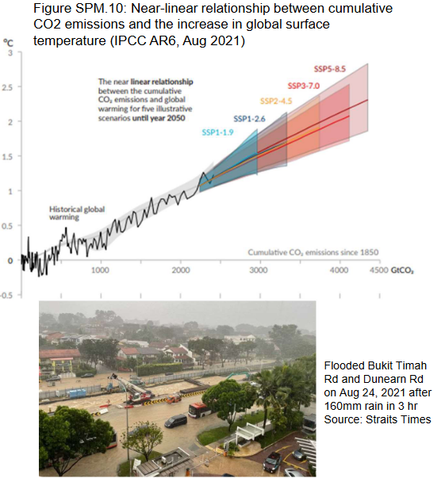
10 Bioenergy and Biomaterials
Gasoline, the fuel we use for cars, comes from a surprising source. It’s made from ancient plants called lycophytes and ferns that lived around 300 million years ago. These plants have long been replaced by modern seed plants. To create just one gallon of gasoline, we need around 89 metric tons, which is about 180,000 pounds, of these ancient plants. That’s a lot of prehistoric vegetation packed into a tiny gas tank!
Now, let’s talk about fossil fuels. They are a massive source of energy for our world, and they come from the remains of these ancient plants and other organic materials. Fossil fuel reserves are like a big savings account of carbon that nature has been building for millions of years. There’s an estimated 5,000 gigatons (that’s a really huge number!) of carbon stored in these reserves. These reserves are essentially our planet’s ancient energy storage, and we’ve been using them to power our world for a long time.
10.1 Political Actions Regarding Global Warming
10.1.1 IPCC Report From August 2021
The IPCC Report AR6 from August 2021 delivers a clear message: human activities are undeniably responsible for heating up our planet. This warming affects not only the atmosphere but also the ocean and the land. As a result of this human-induced climate change, we’re already experiencing changes in our weather and climate patterns all around the world.
In Singapore, for instance, the weather is changing too. In fact, it’s getting warmer there even faster than the global average. Over the years since 1948, Singapore has seen a temperature rise of 1.8 degrees Celsius, which is higher than the global increase of 1.1 degrees Celsius. This means that Singapore is warming up at a faster rate.
The changes in Singapore’s weather also include more heavy storms. In 1980, there were five days with intense rainfall exceeding 70 millimeters per hour, but in 2012, that number doubled to ten days. This shows that the frequency of severe storms is increasing.
The city is also experiencing heavier rainfall. The maximum amount of rain in a single day has increased from 80 millimeters to 107 millimeters. This means that when it rains heavily, it’s even more intense than before.
Another issue is the increase in haze days. Haze is when the air is filled with tiny particles that reduce visibility and can be harmful to breathe. Singapore is facing more of these hazy days, which can impact the quality of the air people breathe and their overall health. So, the IPCC report and the changes in Singapore’s weather patterns remind us that climate change is a real and pressing issue with observable impacts.
10.1.2 Climate Change
“Environmental migrant refers to people who are forced to migrate from or flee their home region due to sudden or long-term changes to their local environment which compromise their well being or secure livelihood, such changes are held to include increased droughts, desertification, sea level rise, and disruption of seasonal weather patterns such as monsoons.”
– Wikipedia
10.1.3 Paris Agreement
The Paris Agreement is a significant international deal focused on addressing the issue of greenhouse gas emissions. In 2015, 195 countries came together and reached a consensus to combat climate change. Their main goals were to prevent the global average temperature from rising by more than 2 degrees Celsius above pre-industrial levels. Later, in October 2018, they even considered aiming for a stricter target of 1.5 degrees Celsius to limit temperature increase.
To achieve these goals, each country agreed to create their own plans, called ‘Nationally Determined Contributions’ or NDCs, to reduce their emissions. As of now, 196 members of the United Nations Framework Convention on Climate Change (UNFCCC) have signed this treaty. The agreement officially took effect on November 4, 2016.
There were some changes related to the Paris Agreement involving the United States. While the U.S. initially joined the agreement, they withdrew from it under the presidency of Donald Trump on November 4, 2020. However, they rejoined the agreement on February 19, 2021, under the leadership of President Biden.
Countries have also made commitments to reduce emissions. For example, France has announced ambitious plans to ban all petrol and diesel vehicles by 2040 and aims to achieve carbon neutrality by 2050.
Singapore, as a part of its NDCs, has set specific targets. They plan to reduce their emissions intensity, which is the amount of carbon emissions produced for each dollar of the Gross Domestic Product (GDP), by 36% compared to 2005 levels by 2030. They also aim to stabilize their emissions with the goal of reaching their peak around 2030. Ultimately, Singapore is striving to achieve net-zero emissions by 2050, which means they want to balance out the amount of greenhouse gases they release with the amount they remove or offset.
10.2 Bioenergy
Bioenergy is a type of renewable energy that comes from biological sources. This energy can be used for various purposes like heating, generating electricity, or powering vehicles. It’s a sustainable energy source, and the United States Department of Agriculture (USDA) defines it this way. Bioenergy is one of the fastest-growing types of renewable energy, which means it’s becoming more and more popular.
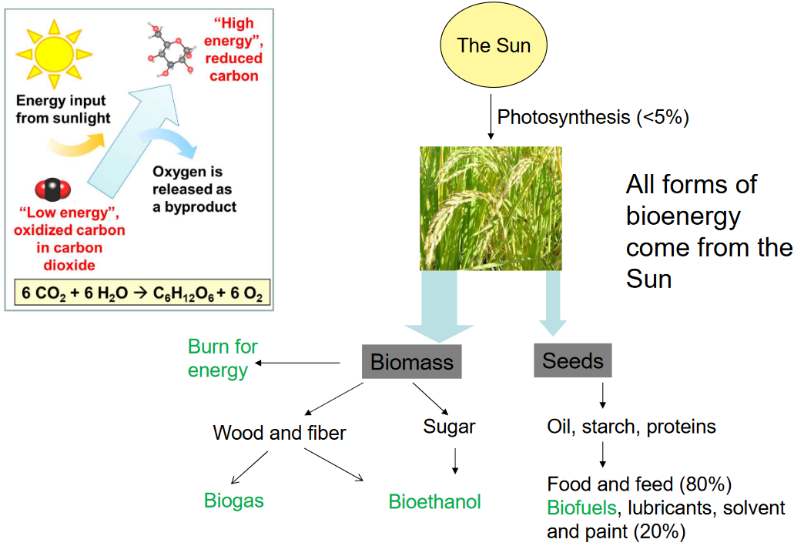
There are several forms of bioenergy. One of them is bio-ethanol, which can be used as a substitute for gasoline in our cars. It’s made through the fermentation of simple sugars or starches. Another form is cellulosic ethanol, which is produced from the fermentation of biomass, like plant materials.
Bio-diesel is another type of bioenergy, and it’s used as a replacement for regular diesel fuel. It can be made from fatty acids found in plants, animals, or even algae. This means we can use these natural sources to power our vehicles in a more environmentally friendly way.
Bio-gas, often in the form of methane, can replace natural gas. It’s created through a process called anaerobic fermentation using biomass. This is a way to produce gas for heating and cooking that’s better for the environment.
Finally, biomass can be directly burned to produce energy. This means using plant and organic materials as a fuel source. It’s another way to harness the power of nature for our energy needs. So, bioenergy offers many different ways to make our energy consumption more sustainable.
10.2.1 Why Bother with Bioenergy?
Bioenergy has some really attractive qualities. One of the biggest advantages is that it’s a sustainable energy source. This means that we can keep using it without worrying about running out, unlike some other energy sources that can be depleted.
Another great thing about bioenergy is that it’s carbon neutral. This means it doesn’t add new carbon dioxide (CO2) into the atmosphere when we use it. This is important for fighting climate change because CO2 is a major contributor to global warming.
In addition to being better for the environment, bioenergy is also less polluting in other ways. It doesn’t release pollutants like aromatics, sulfur, or silt, which can harm our air and water quality.
Furthermore, bioenergy can have positive economic effects. It can create business opportunities and jobs in the bioenergy industry. This means that not only is it good for the environment, but it can also benefit our economies by providing employment and stimulating business growth. So, bioenergy has a lot of appealing features that make it an attractive option for a sustainable and cleaner energy future.
10.2.2 Energy Prices
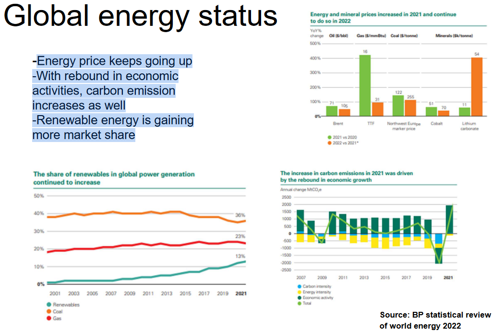
Energy prices are on the rise, and there are a few important reasons for this. As our economy bounces back and becomes more active, our carbon emissions, which are harmful to the environment, are also increasing. This happens because when we use more energy, it often comes from sources like fossil fuels, which release carbon emissions when burned.
However, there’s a silver lining to this story. Renewable energy sources, like solar and wind power, are becoming more popular. They’re gaining a bigger share of the energy market. This is great news for the environment because renewable energy is much cleaner and doesn’t produce the harmful emissions that fossil fuels do. So, even though energy prices are going up, the increasing use of renewable energy is a positive step in reducing the impact on our planet.
10.2.3 Energy Measurements and Content Comparison
When we talk about energy, we use specific measurements to understand it better. These measurements help us figure out how much energy something contains. There are two main ways to express energy content: the Lower Heating Value (LHV) and the Higher Heating Value (HHV). Which one we use depends on whether the energy is taken from hot exhaust gas or not.
To make these measurements more relatable, here are some basic units and conversions that can help us understand them better:
1.0 joule (J) is a small amount of energy, and it’s equivalent to the force of one Newton applied over a distance of one meter. It’s also about 0.239 calories (cal).
1.0 British thermal unit (Btu) is a measure of energy used in some countries, and it’s equal to about 1055 joules (1.055 kJ).
1.0 gigajoule (GJ) is a much larger unit of energy. It’s equal to 1 billion joules, which is about 0.948 million Btu, 239 million calories, or 278 kilowatt-hours (kWh).
1.0 watt (W) is a measure of power, which is the rate at which energy is used. It’s equivalent to 1 joule per second or about 3.413 Btu per hour (Btu/hr).
1.0 horsepower (hp) is another unit of power. It’s equal to 550 foot-pounds per second, which is approximately 2545 Btu per hour, 745.7 watts (W), or 0.746 kilowatts (kW).
1.0 kilowatt (kW) is also a measure of power and is equal to 3413 Btu per hour or about 1.341 horsepower (hp).
1.0 kilowatt-hour (kWh) is a measure of energy commonly used in our homes. It’s equal to 3.6 megajoules (MJ), 3413 Btu, or the amount of energy a 1-kilowatt device uses in one hour.
These measurements help us understand and compare different forms and amounts of energy, which is important for things like designing energy systems, calculating energy costs, and making informed decisions about energy use.
Energy content can also vary greatly between different sources, and it’s important to know these values for various purposes. Here’s a comparison of the energy content of different fuels and substances:
Wood fuel (air dry, 20% moisture) contains about 15 gigajoules per metric ton (GJ/t). This is the energy you get from one ton of dry wood.
Agricultural residues can range from 10 to 17 GJ/t, depending on their moisture content. These residues come from crops and farming.
Charcoal, which is derived from about 6 to 12 metric tons of air-dry wood, has an energy content of 30 GJ/t.
Coal, a widely used fossil fuel, has an energy content of about 27 GJ/t.
Ethanol has an energy content of 26.7 GJ/t, but it’s important to note that this value is based on its Lower Heating Value (LHV) and its density is approximately 0.79 kilograms per liter.
Gasoline, the fuel we use in our cars, has a high energy content of about 43.5 GJ/t, with a density of around 0.73 kilograms per liter.
Diesel fuel contains approximately 42.8 GJ/t, and its density is about 0.84 kilograms per liter.
Biodiesel, which is made from biological sources, has an energy content of 37.8 GJ/t and a density of about 0.88 kilograms per liter.
Natural gas (methane) has an energy content of about 37.8 megajoules per cubic meter (MJ/m3).
Liquid natural gas (LNG), which is a supercooled form of natural gas, contains a substantial 53.6 GJ/t with a low density of approximately 0.187 kilograms per liter.
Liquid hydrogen, often used as a rocket fuel, has a very high energy content of 143 GJ/t with an extremely low density of about 0.07 kilograms per liter.
Nuclear fission of U-235 in a nuclear power plant has an enormous energy content of 88,250,000 GJ/t. This is the result of nuclear reactions in nuclear power plants.
These energy content values are essential for understanding the efficiency and feasibility of different energy sources and fuels for various applications.
10.2.4 Bioethanol
Bioethanol is a type of biofuel made through a process called fermentation. It’s created from different types of substances, primarily polysaccharides or simple sugars. The sources of these materials vary and include the following:
Sugarcane, sugar beet, or sweet sorghum juices are often used to make bioethanol. These juices contain mainly simple sugars, which are easily converted into ethanol through fermentation.
Corn or wheat are also commonly used to produce bioethanol. In this case, the main source is starch, which gets broken down into sugars and then fermented.
There are also other sources of starch, such as yam, potato, tapioca (cassava), and more, which can be utilized to create bioethanol. These starchy materials can be processed to release the sugars needed for fermentation.
Bioethanol is a sustainable and renewable fuel source that can be used in place of traditional gasoline, and it’s made from a variety of natural sources, depending on what’s most available and efficient in different regions.
10.2.4.1 Case Study: Brazil
Brazil has an impressive success story when it comes to sugarcane ethanol. In 2022, they produced a whopping 31.6 billion liters of ethanol. This incredible amount is made possible because they have a vast sugarcane plantation area that covers 9 million hectares. One remarkable thing about their production is that it’s cost-effective, with a production cost of only US$0.75 per gallon of ethanol. This means they can make a lot of ethanol without breaking the bank.
Not only is Brazil producing a lot of ethanol, but they’re also doing it in an environmentally friendly way. The energy balance of their ethanol production is quite impressive, with an output/input ratio of more than 8. This means they get a lot more energy out of the process than they put in. It’s a smart and efficient way to produce fuel.
Another fantastic benefit is that using sugarcane ethanol results in far fewer greenhouse gas emissions compared to gasoline. Gasoline emits 20.4 units of greenhouse gases, while ethanol only emits 9 units. This means that using ethanol instead of gasoline helps reduce greenhouse gas emissions by 56%. It’s a big win for the environment.
In Brazil, you’ll also find that nearly 95% of the cars sold are equipped with a ‘flexi’ engine, which can run on both gasoline and ethanol. This flexibility gives people more options and encourages the use of ethanol. In fact, ethanol provides more than half, or 52%, of the fuel used in cars and light trucks in the country.
One of the key factors contributing to Brazil’s success is the remarkable sugarcane itself. It grows rapidly in the tropical climate, thanks to its unique photosynthesis process. This, in turn, results in high yields of sugar, which is used to make ethanol. Brazil’s success in sugarcane ethanol is not only impressive but also serves as an example of how sustainable and eco-friendly practices can lead to a more environmentally responsible and economically efficient fuel industry.
10.2.4.2 Case Study: US
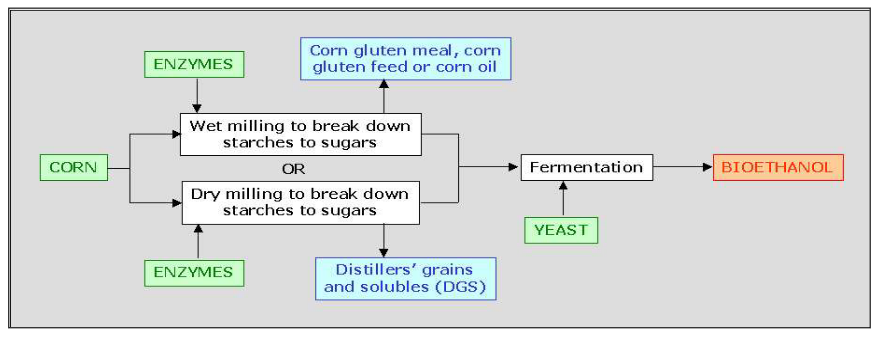
In the United States, bioethanol production mainly relies on corn as its primary source. Corn is used to make bioethanol, but the way it’s done is a bit different compared to some other countries. Here, the government provides subsidies to support the production of bioethanol. This means that the government gives financial help to make it easier for people to produce this eco-friendly fuel.
However, one important thing to know is that the production cost of bioethanol in the U.S. is relatively higher compared to other countries. This can affect how much bioethanol is produced and how competitive it is in the market.
There are some ongoing discussions and debates about bioethanol in the United States. Some of the key points people are talking about include the energy balance. This is about how much energy you get out of bioethanol compared to the energy put into making it. There are also concerns about intensive farming practices and the potential impact on the environment. Additionally, there’s a debate about using crops like corn for bioethanol when they could also be used for food, raising concerns about competition for food resources. These are all important topics to consider when thinking about bioethanol in the United States.
10.2.4.3 Bioethanol versus Biobutanol
When we compare bio-butanol to bio-ethanol, we find some interesting similarities and differences that are worth exploring.
Similarities: Both bio-butanol and bio-ethanol are short-chain alcohols, and they can both be used as alternatives to gasoline. They have something in common when it comes to where they come from. You can make them from the same raw materials, like plant-based sources, but you use different processes and microorganisms to do it.
Differences: Now, here’s where they start to stand apart. Bio-butanol has a higher volumetric energy density compared to bio-ethanol, which means it contains more energy in the same amount of space. Think of it as having more power packed into a smaller container.
Another cool thing about bio-butanol is that it’s less prone to absorbing water and evaporating. This makes it easier to store and transport without losing its qualities.
But perhaps one of the most significant differences is that bio-butanol is more similar to regular gasoline. It’s what we call a ‘drop-in’ fuel, which means you can use it in vehicles designed for gasoline without making any changes to the engine. It’s like a direct replacement. Bio-ethanol, on the other hand, might need some adjustments to work in gasoline engines.
However, there’s a catch. Right now, when we make bio-butanol, we get a bit less energy out of the same raw materials compared to bio-ethanol.
10.2.5 Cellulosic Ethanol
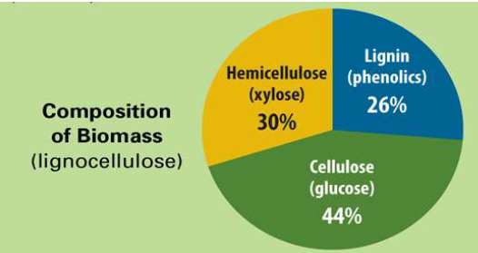
Cellulosic ethanol is a fascinating concept in the world of biofuels. It’s all about taking the cellulose found in various plant materials and turning it into ethanol, which can be used as an eco-friendly fuel. This is a significant advancement because it allows us to use parts of plants that are typically harder to convert into fuel.
When it comes to choosing which plants are the best candidates for making cellulosic ethanol, grasses and trees are at the top of the list. Grasses and trees, like switch grass in the United States or willow trees in New Zealand and Australia, are great choices. These plants are not only abundant but also excellent at capturing and storing carbon dioxide from the atmosphere, which makes them super eco-friendly. So, cellulosic ethanol is all about using the natural power of these plants to create a greener fuel source.
10.2.5.1 Making Cellulosic Ethanol
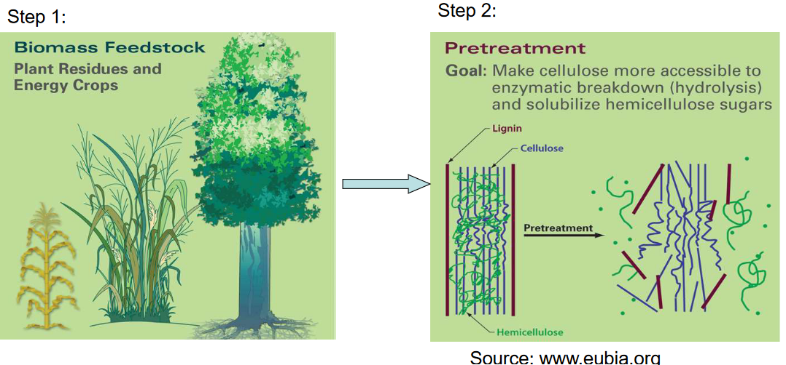
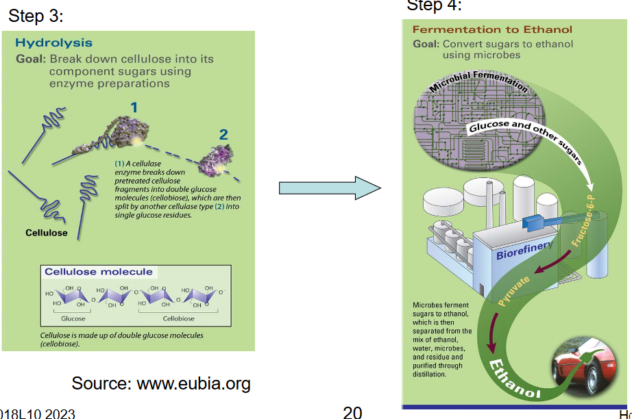
10.2.5.2 Challenges with Making Cellulosic Ethanol
Cellulosic bioethanol is an exciting field, but it does come with some technical challenges. One of the main difficulties is separating cellulose from lignin, which is another component found in plant materials. This separation process can be a bit tricky because these two parts are naturally bonded together.
Once we have the cellulose, the next step is breaking it down into its sugar components, which can then be turned into ethanol. This process takes some time and isn’t very speedy. To put it in perspective, it can take a whole week to produce just 70 gallons of ethanol from one ton of biomass. This is not as efficient or fast as some other methods of ethanol production.
Moreover, cellulosic bioethanol tends to be less efficient in terms of the amount of fuel you get from the biomass you start with. Additionally, the production cost can be higher compared to other methods, which can make it less economically competitive. These are some of the challenges and limitations that researchers and scientists are working to overcome to make cellulosic bioethanol a more viable and efficient fuel source.
10.2.6 Biodiesel
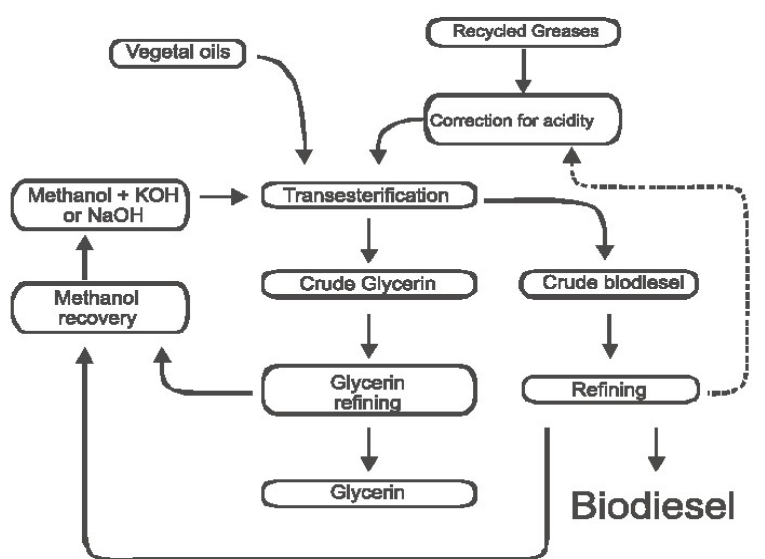
Biodiesel is a special type of fuel made from natural sources. It’s technically the mono alkyl esters of long chain fatty acids that come from renewable lipid sources. To make biodiesel, you use a chemical reaction called trans-esterification on substances like triglycerides, which are found in fats.
Biodiesel has some really cool advantages. For one, it has a lower viscosity and a lower melting point compared to regular diesel fuel. This means it flows more easily and can work well in cold weather. Even better, you can use biodiesel directly in diesel engines without making any modifications, so it’s a smooth transition.
Biodiesel also has a high cetane number, which is a good thing for diesel engines. Plus, it doesn’t have sulfur or aromatics, which can be bad for the environment. This makes biodiesel a more environmentally friendly choice.
One last perk is that biodiesel provides good lubrication to the engine, which helps keep everything running smoothly.
10.2.6.1 Sources of Biodiesel
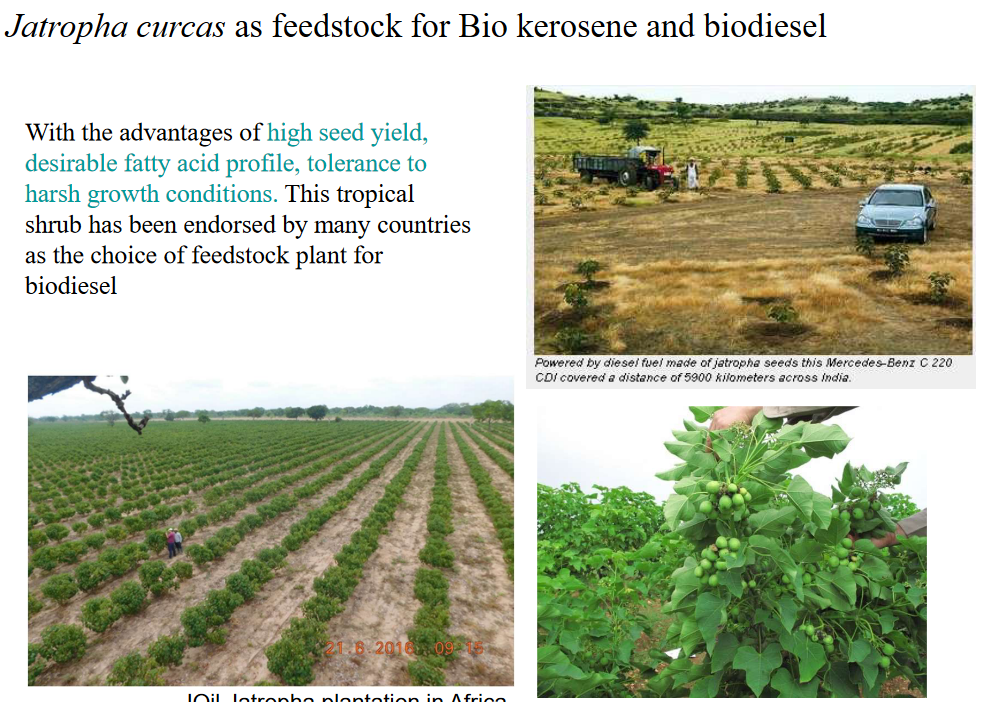
When it comes to making biodiesel, there are various sources of fatty acids that can be used. These fatty acids are essential ingredients for creating biodiesel, and they can come from a variety of places. Some of the common sources include used cooking oil or animal fat, which are things we often have as waste in our kitchens and food processing.
In Europe, canola oil is a popular source for making biodiesel. It’s abundant and can be converted into this eco-friendly fuel. In the United States, soybean oil is commonly used for biodiesel production. It’s a readily available resource that can be used sustainably.
In some parts of the world, like Malaysia and Indonesia, palm oil is a significant source of fatty acids for biodiesel. This oil has been widely used, although there are concerns about its environmental impact.
There are also some emerging sources of fatty acids for biodiesel. These include plants like Jatropha, Pongamia, and the Chinese tallow tree, as well as microorganisms like algae. These newer sources are being explored and developed to create more sustainable and environmentally friendly biodiesel options.
10.2.6.2 Biodiesel Terminology
\[\begin{align} SN &= \frac{\sum(560 \times A_i)}{MW_i} \\ IV &= \frac{\sum(254 \times D \times A_i)}{MW_i} \\ CN &= 46.3 + \frac{5458}{SN} - 0.225 \times IV \end{align}\]
In the world of biodiesel, there are some special terms that help us understand and measure its characteristics. Let’s break them down:
SN (Saponification Number): This number tells us about the length of the fatty acids in biodiesel. It’s a way to measure the structure of the fatty acids.
IV (Iodine Value): The IV is about the degree of unsaturation in biodiesel. Oils with a high IV can become thicker when they’re heated. A common standard is an IV of less than 115.
CN (Cetane Number): The CN measures how quickly a fuel can ignite. Different countries and organizations have biodiesel standards, with values usually greater than 47, 49, or 51.
Others: There are some additional characteristics to consider when it comes to biodiesel, such as melting points, cloud points, and cold filter plugging points (CFPP). These values help us understand how biodiesel behaves under different temperature conditions.
Understanding these terms is essential for making and using biodiesel effectively and safely. They provide valuable information about its composition, properties, and performance.
10.2.6.3 Comparing Biodiesel and Bioethanol
Let’s compare two important biofuels: bioethanol and biodiesel. Each has its own set of characteristics and considerations.
Bioethanol: - When bioethanol is used, it can lead to corrosion of pipelines. This is because ethanol has properties that can affect the materials used in pipelines. - Blends of more than 15% ethanol in gasoline may require a few modifications to the engine to work properly. These changes ensure that the engine can handle the higher ethanol content. - Bioethanol has higher evaporation losses due to its higher vapor pressure. This means it can evaporate more quickly, which may affect its efficiency. - It also has a lower calorific value, meaning it provides less energy per unit compared to some other fuels. As a result, vehicles may need larger fuel tanks to go the same distance.
Biodiesel: - Biodiesel has an advantage when it comes to energy content. It contains about 25% more energy compared to bioethanol. This means it can provide more power and efficiency for engines. - It’s relatively easy to store and transport biodiesel. This makes it a convenient choice for many applications. - Biodiesel has lubricating properties, which can be beneficial for engines. It helps reduce wear and tear, making it a good choice for vehicles and machinery.
10.2.7 Biogas
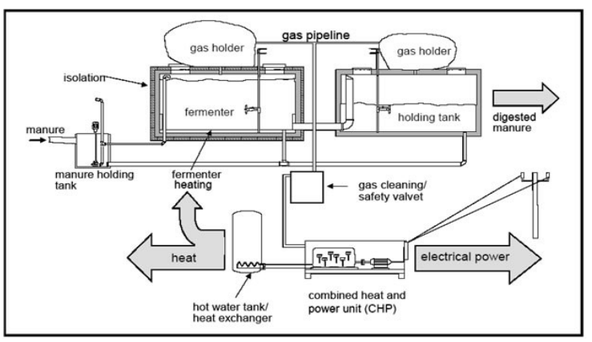
When we talk about anaerobic digestion of biomass for biogas production, we’re essentially describing a process where bacteria break down organic materials, like food waste or agricultural residues, in an environment without oxygen. This absence of oxygen is crucial for this process to work.
As a result of this breakdown, biogas is generated, and it’s primarily made up of two main gases: methane and carbon dioxide. Methane is a valuable component because it can be used as a source of energy, similar to natural gas. The carbon dioxide produced in this process is a common greenhouse gas, but in biogas, it can be harnessed and used as well. This anaerobic digestion of biomass is an environmentally friendly way to generate useful energy from organic waste materials.
10.2.8 Generating Biogas
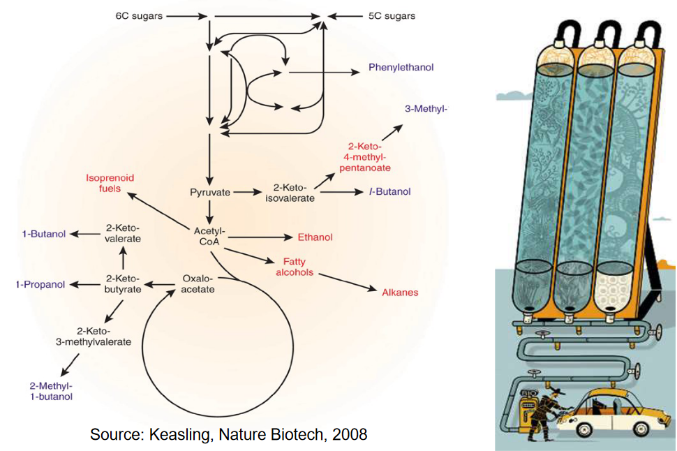
Pyrolysis and gasification are two different ways to turn biomass, like wood or plant materials, into useful energy sources. Let’s break them down:
Pyrolysis: This is a process where biomass is heated without any air or oxygen around. The result can be either charcoal or a special liquid called bio-oil. This bio-oil can be used like regular fuel oil or turned into synthetic gasoline or diesel fuel. It’s a bit like cooking without using oxygen to create something valuable from biomass.
Gasification: Gasification is another way to change biomass into energy. It’s done by heating biomass at really high temperatures, usually around 800°C or more. This heat breaks down the biomass into a gaseous form, which is like a gas that can be used for energy. This gas, often called “producer gas,” contains different gases like hydrogen, carbon monoxide, carbon dioxide, and methane. The cool thing is that depending on how you do the process, you can get gas with different energy values. For example, if you use air in the process, you get gas with lower energy, suitable for things like boilers and engines. But if you use oxygen, you get gas with a bit more energy, which can be used for making things like methanol and gasoline.
10.2.8.1 Biomass from Algae
Let’s talk about using fatty acids or biomass from algae as a source of biofuel. Algae are tiny aquatic plants, and some of them are incredibly rich in fatty acids, making up as much as 40% of their total mass. These fatty acids can be taken out and turned into a special kind of biofuel called biodiesel. It’s a bit like turning these plants into a fuel for our cars.
Algae are quite remarkable because they’re fantastic at photosynthesis, the process where they use sunlight to make their own food. Some types of algae can grow really quickly and efficiently, almost like they’re supercharged plants. This efficiency means that from just one hectare of algae, you could potentially produce over 10,000 gallons of biofuel in a single year. That’s a lot of fuel!
One interesting thing is that you can even use the exhaust gases from power plants to help these algae grow. It’s like giving them extra food to make even more biofuel. But, like anything, there are challenges to overcome. When it comes to algae, there are some problems with things like culturing and harvesting them, as well as getting the oil out of them for the biodiesel. Plus, the fatty acids in algae tend to have a high level of unsaturation, which can make the biodiesel less stable.
10.2.9 Densifying Biomass Fuel
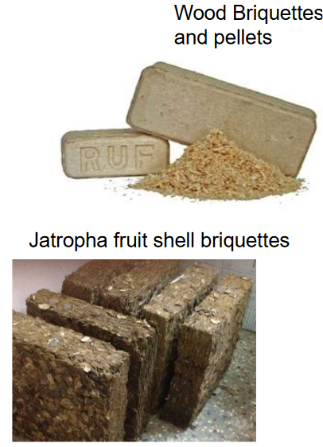
Densified biomass fuel is a clever solution to some common issues with regular biomass. Regular biomass can be bulky and doesn’t contain much energy per unit of volume, which can make it challenging to store and transport.
Densified biomass fuel, on the other hand, addresses these problems. It’s been processed in a way that significantly increases its bulk density, making it three to four times denser than regular biomass. This means that it weighs more and has less moisture content, making it easier to store and transport.
The increased density also results in higher energy content per unit of volume, which is fantastic for power generation and heating. In other words, you get more energy from the same amount of space, which is both efficient and environmentally friendly. This densified biomass fuel is a great way to make the most of biomass resources for various energy applications.
10.2.10 Net Energy Gain
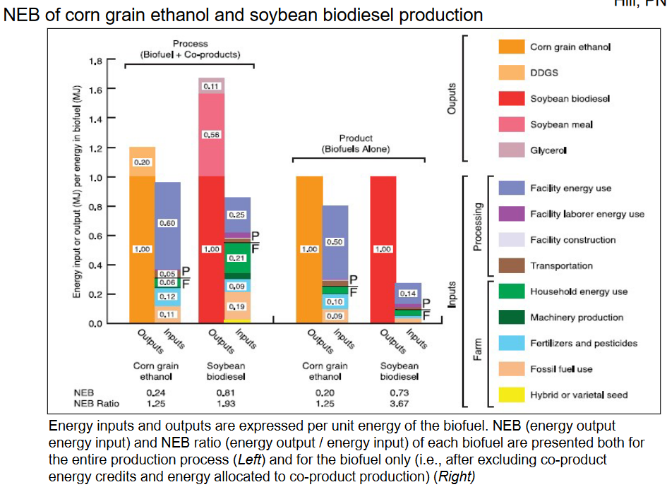
When we’re talking about the impact of biofuels on the environment, we’re looking at something called “net energy gain” or NEG. This is all about figuring out if we’re getting more energy out of biofuels than we put in during the whole process.
The inputs are all the energy and resources needed to make biofuels. This includes the energy used for planting, fertilizing, running machinery on the farm, operating the biofuel production facility, and even building houses for the workers. It’s a lot of stuff that goes into the process.
On the other side, the outputs are the energy we get back from the biofuel-making process, like co-products. For example, when we make bioethanol from corn, we also get a co-product called DDGS. For biodiesel, we get glycerol. These co-products contain energy too, and that’s a good thing.
To figure out if biofuels are a net gain in terms of energy, scientists use a bunch of data and math. They look at things like how much energy we get from farms, how much all the ingredients cost, how efficiently the production plants work, and what kind of environmental impact biofuels have. All this info helps us see if biofuels are a good choice for getting more energy without harming the environment too much. It’s like doing some careful math to make sure we’re making the right energy choices.
10.2.11 Potential Problems with Bioenergy Projects
Let’s explore some of the potential issues that can come up with bioenergy projects.
Deforestation: One problem is that when we create bioenergy, we sometimes cut down forests to get the materials we need. This is called deforestation, and it’s not good for the environment because it reduces the number of trees that absorb carbon dioxide and provide habitats for animals.
Competition for Food and Land: Bioenergy projects can also compete with food production and agricultural land. When we use crops or land for bioenergy, it means there’s less space and resources available for growing food. This competition can drive up food prices and cause shortages.
Dirty Processes for Clean Fuel: It might sound strange, but some processes used to make clean biofuels are not very environmentally friendly. They can release pollution and harm the air and water, even though the end product is meant to be clean fuel.
High Energy Input and CO2 Emissions: In some cases, making bioenergy takes a lot of energy and results in carbon dioxide (CO2) emissions. This means that the process contributes to climate change and might not be as environmentally friendly as we hoped.
Low Yield and High Costs: Some bioenergy projects don’t give us a lot of energy in return for the effort and resources we put into them. They can also be expensive to set up and maintain.
Wastewater Issues: Finally, bioenergy projects can create wastewater that contains substances with high biochemical oxygen demand (BOD). This means they take oxygen from water bodies and harm aquatic life. When oxygen is reduced in water, it can cause problems for fish and other creatures that live there.
10.2.12 Other Sources of Renewable Energy
Let’s check out some other cool sources of renewable energy besides bioenergy:
Solar Energy: We can capture energy from the sun in a couple of ways. One is using solar cells, which you might have seen on rooftops or in calculators. They turn sunlight into electricity. Another way is with solar thermal power stations. These use the sun’s heat to make electricity. Both methods are super eco-friendly.
Wind Turbines: You’ve probably seen these giant windmills spinning in the wind. They’re like super-efficient fans that turn wind energy into electricity. Wind turbines can be found in wind farms and are a great source of renewable power.
Tide: The rising and falling of the ocean’s tides can be used to generate electricity. It’s a bit like harnessing the power of the sea to create energy. This is called tidal energy, and it’s a pretty clever way to go green.
Geothermal or Underground Heat: Under the Earth’s surface, it’s toasty warm. We can tap into this heat using geothermal energy. Sometimes, we create Engineered Geothermal Systems (EGS) to make use of this underground heat. It’s like having a natural heater beneath the Earth’s crust that we can use for electricity and heating.
10.2.12.1 Research and Development on Biofuel Feedstock
Let’s explore what’s happening in the world of research and development (R&D) for biofuel feedstock. The goal here is to create new crops that are specifically designed for making fuel. We want these crops to be great at producing the raw materials we need, called feedstock. Then, we can take this feedstock and turn it into fuels that people not only like but can also afford.
In the current R&D directions, scientists are working on some exciting things. They’re aiming for crops like grasses, trees, and algae to grow faster in a broader range of climates. This means we can get these materials in more places, making biofuels more accessible.
There’s also a focus on creating larger, energy-rich alcohols or Isoprenoid biofuels. These have the potential to pack more power into our fuels. Scientists are looking into bioprocessing, which is a way to change plant fatty acids into smaller molecules known as biocrude. This process can make biofuel production more efficient.
10.3 Bioenergy and Singapore
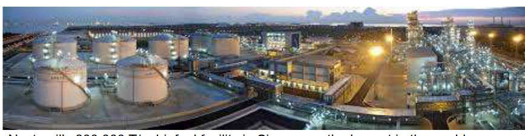
Singapore is diving into the world of bioenergy with a multi-faceted approach. They’re setting up an R&D center, which stands for Research and Development. This center will be like a hub for discovering new ideas and technologies in the field of bioenergy. Scientists and researchers will work here to find better and more sustainable ways to use bioenergy.
There’s also going to be a financial and operation center. This is where the business side of bioenergy happens. They’ll handle the money and operations to make sure everything runs smoothly. It’s a bit like the control room of a big bioenergy operation.
Singapore is also getting into manufacturing biofuel. That means they’ll be producing biofuel on a larger scale, turning the science and ideas into real products that can be used for energy. It’s like a bioenergy factory.
Lastly, there’s a logistics center. This is where all the planning and organization takes place to move bioenergy products from one place to another. They’ll figure out the best ways to get biofuels to where they’re needed.
10.3.1 Petrochemicals and Singapore’s History
Let’s take a look at why we’ve relied on petrochemicals for so long and why we’re now considering a shift back to nature.
Petrochemicals: These are chemicals and materials made from petroleum, which is a type of fossil fuel. Petrochemicals have been popular because they’re relatively cheap to get from the ground, and they have a consistent and predictable composition. It’s like using building blocks that are easy to work with. The process of turning them into useful things is also quite straightforward.
Going Back to Nature: The reason we’re thinking about moving away from petrochemicals and returning to natural sources is because it’s better for our planet. First, using petrochemicals contributes to global warming because they release greenhouse gases. Going back to nature with bio-based materials can help reduce our impact on the environment. It’s part of a more sustainable and renewable future where we use resources that can be replaced naturally.
Additionally, advancements in “green chemistry” are making it possible to create materials and chemicals from natural sources in more environmentally friendly ways.
10.4 Kinds of Biomaterials
Traditional Biomaterials: These are the ones we’ve been using for a long time. Think of wood, timber, paper, and pulp, along with materials like particleboard. These have been our go-to materials for ages, and they come from plants and trees.
New Biomaterials: Now, we’ve got some exciting new players in the game. These are bioplastics, bio-composites, and others. They’re designed to replace the “classic” materials we’re used to, like plastics, aluminum, steel, minerals, fibers, and concrete. These new biomaterials are made from renewable sources and are more eco-friendly.
Biomolecules: These are like the tiny building blocks of life, and they’re turning into biomaterials too. Biomolecules include things like solvents, lubricants, surfactants, and more. They’re used in various sectors, expanding the reach of biomaterials in industries like soap, starch, pharmaceuticals, and fine chemistry.
Biofuels: These are special biomaterials that are used for energy. Biofuels are like eco-friendly fuels that can replace things like gasoline and diesel. They’re made from renewable resources like plants and algae.
10.4.1 Approaches for Processing Biomass
10.4.1.1 Deconstruction Approach
Advantages: This method comes with some real perks. It helps us separate and collect valuable molecules that are tricky or even impossible to make through traditional methods. The beauty of it is that these molecules have a “natural” origin, and there’s a wide variety of structures to work with. It’s like discovering hidden treasures in nature.
Limitations: But, like anything, there are some limitations. Sometimes, natural materials like wood and plant cells are a tangled mess of biopolymers, which are complex structures made up of lots of molecules. Separating these can be quite challenging, and it’s often hard to get super pure compounds. So, we might need to make some modifications to these molecules to increase their value. For example, we can turn sugar into a valuable compound like succinic acid, or wood pulp into useful things like cellophane or insulation thermoplastics.
10.4.1.2 Cracking Approach
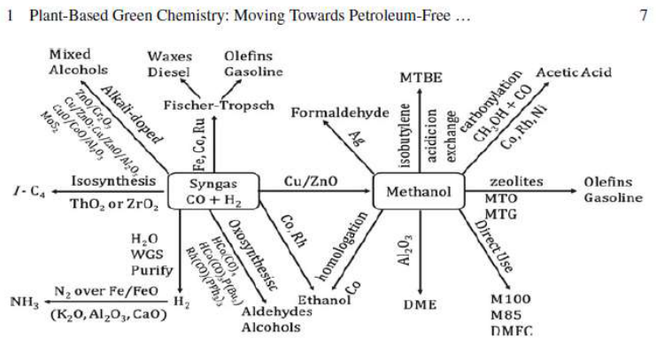
The cracking approach is all about breaking things down using heat. This method involves thermal decomposition, which is a fancy way of saying that we use heat to break apart materials and get energy and chemical building blocks.
Imagine it as if you’re heating something up so much that it starts to split into its smaller parts. This process helps us not only generate energy but also collect the basic components we need to make other useful chemicals. It’s like taking apart a complex puzzle to get all the individual pieces we can use to build something new and valuable.
10.4.2 Problems with Petrochemical Plastics
Massive Plastic Production: Since the 1950s, the world has produced an enormous amount of plastic – over nine billion tons! That’s a staggering amount of plastic stuff.
Heavy Oil Usage: Surprisingly, around 8% of the world’s oil is used to make all this plastic. That’s a significant chunk of our precious oil resources.
Ocean Pollution: Here’s where it gets really concerning. A whopping 165 million tons of plastic waste have ended up in our oceans. And what’s even worse, nearly 9 million more tons find their way into the oceans every year. This pollution in the seas is causing major environmental problems.
Low Recycling Rates: When it comes to recycling, only about 9% of plastic gets recycled. Most of the remaining plastic ends up polluting our environment or is buried in landfills. Here’s the kicker: plastic can take up to 500 years to break down in landfills, and as it does, it can release harmful chemicals into the soil.
10.4.3 Bioplastics
Starch-Based Bioplastics: These are plastics made mainly from starch, which is a natural carbohydrate found in plants like corn and potatoes.
Cellulose-Based Bioplastics: These materials come from cellulose, a component found in plant cell walls. It’s kind of like using nature’s own building blocks.
Protein-Based Plastics: Some bioplastics are created from proteins, which are molecules that make up a part of living things like beans or peas.
Lipid-Derived Polymers: These are made from lipids, which are fats found in plants and animals. It’s another way of turning natural resources into useful materials.
Bioplastics from Fermentation: In this approach, bioplastics are created through a process called fermentation, where microorganisms like bacteria or yeast convert natural sugars into plastic.
Bio-Derived Polyethylene: This type of bioplastic is made from bio-ethanol, which is a type of alcohol that comes from renewable sources.
Polyhydroxyalkanoates (PHA): PHA bioplastics are produced through bacterial fermentation of sugars or lipids, like fats, and they have some interesting properties.
Polylactic Acid (PLA): PLA bioplastics are made through the fermentation of sugars, and they can be used for various things.
These bioplastics are pretty cool because they use natural and renewable materials to create eco-friendly alternatives to traditional plastics. It’s like turning plants, sugars, and other natural resources into materials we can use without causing harm to the environment.
10.4.3.1 Polyhydroxyalkanoates (i.e., PHA)
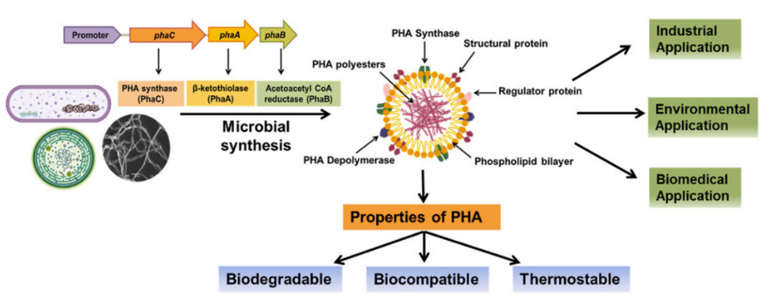
Let’s dive into the world of Polyhydroxyalkanoates (PHA), which are a unique type of bioplastic. Here are some key features:
Intracellularly Accumulated: PHA is a special bioplastic because it’s created inside the cells of certain microorganisms. It’s like a natural storage material produced by these tiny creatures.
Plastic-Like Properties: What’s fascinating about PHA is that it shares properties with synthetic plastics. It can be used in a similar way and has similar characteristics to traditional plastics.
Suitable for Medical Devices: Because of its unique properties, PHA is often used in the medical field. It’s a great fit for making medical devices, which need to meet high standards of safety and performance.
In essence, PHA is a natural bioplastic that’s made inside microorganisms and behaves a lot like the plastics we’re used to. This makes it a fantastic choice for producing items, especially in the medical field, where quality and safety are top priorities.
10.4.3.2 Polylactic Acid (i.e., PLA)
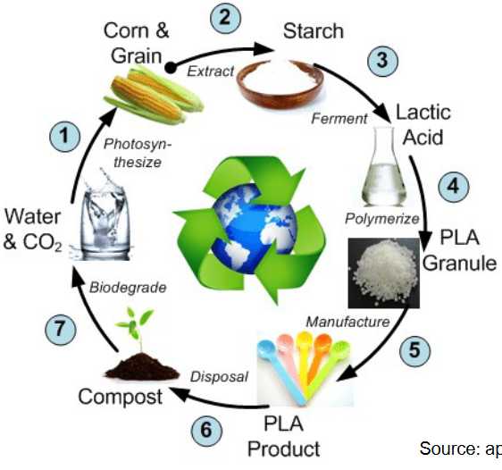
Let’s talk about Polylactic Acid (PLA), which is an exciting material that can lead us towards a greener future.
Natural Origins: PLA is typically made from the sugars found in plants like corn starch, cassava, or sugarcane. These natural sources are renewable, which means we can grow more of them without harming the environment.
10.4.3.3 Noting Points
Plant Sugar Derivatives: Bioplastics are usually created from derivatives of plant sugars. This means they come from things like corn or sugarcane, which are renewable and can be grown again and again.
Blended Materials: Sometimes, bioplastics are mixed with other materials to make them work better. For example, you might find bioplastics blended with something called thermoplastic starch to improve their performance.
Growing in Popularity: Bioplastics are gaining popularity. While they made up only 4% of the global plastics market in 2019, they’re growing rapidly at about 30% per year. It’s estimated that by 2030, they could make up a significant 40% of the market.
Biodegradability Varies: It’s important to note that not all bioplastics are biodegradable. Some will break down naturally, while others may not.
Environmental Impact: Bioplastics have different environmental impacts, and there are some debates and controversies surrounding their overall eco-friendliness.
Challenges Remain: Even though bioplastics are on the rise, they still face challenges in terms of cost and performance. Making them both affordable and high-performing is an ongoing process.
Biodegradable: One of the great things about PLA is that it’s biodegradable. This means it can break down naturally over time, unlike traditional plastics that stick around for a very long time.
Plastic-Like Qualities: Even though PLA is eco-friendly, it can still look and behave a lot like regular polyethylene, which is a common plastic. This means we can use it for various things while being kind to the planet.
In a nutshell, PLA is a fantastic solution for a greener tomorrow. It comes from renewable plant sources, it’s biodegradable, and it can be used just like regular plastic. It’s a step in the right direction for a more eco-friendly and sustainable future.
10.4.4 Natural Plant Fibers
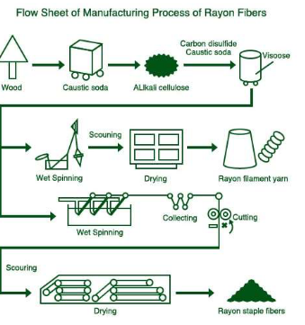
Let’s talk about renewable fibers, which are materials that come from nature and can be used to make various products. There are two main categories:
Natural Plant Fibers: These fibers are directly sourced from plants. They include familiar ones like cotton, hemp, flax, jute, bamboo, ramie, kenaf, sisal, and even coconut fibers. These materials are as natural as they come, and they’ve been used for ages.
Cellulose-Based Fibers: Some fibers are made from cellulose, which is a natural substance found in plant cell walls. These include rayon (also known as viscose), lyocell (often called Tencel), modal, acetate, regenerated bamboo fiber, soy fiber, seacell (made from seaweed), and even nanocellulose, which is super tiny and used in some advanced applications.